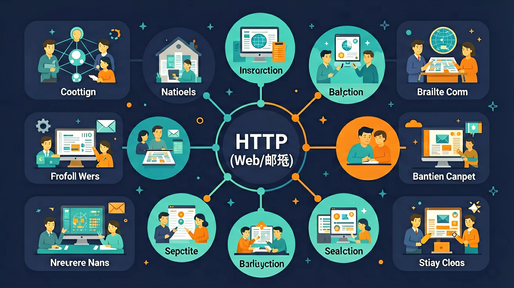

观察日常生活中的信息系统，理解计算机网络在信息系统中的作用，通过组建小型无线网络，了解常见网络设备的功能，知道接入方式、带宽等因素对信息系统的影响。

🎯 能说出HTTP协议的基本工作原理
🎯 能判断常见URL结构的组成部分
🎯 能分析钓鱼邮件的典型特征
❓ 为什么我输入网址后，网页就能跳出来？
❓ 邮件发送后到底是怎么传到对方邮箱的？
❓ 用HTTP和HTTPS打开的网站有什么区别？
学完这一课，这些问题你都能自信地回答。
以下哪个是合法的URL结构？
邮件协议中负责发送的是？
选择或输入后，这节课会围绕你的问题展开。
学习「互联网应用（HTTP/Web/邮件）」时，第一步最应该做什么？
先选一个，错了正好暴露你的前概念，我们一起纠正。
互联网应用（HTTP/Web/邮件）是高中信息科技的重要内容。观察日常生活中的信息系统，理解计算机网络在信息系统中的作用，通过组建小型无线网络，了解常见网络设备的功能，知道接入方式、带宽等因素对信息系统的影响。
通过分析典型的信息系统，知道信息系统的组成与功能，理解计算机、移动终端在信息系统中的作用，描述计算机和移动终端的基本工作原理。
学习路径：明确概念→掌握方法→情境练习→反思纠错。
探讨信息技术对社会发展、科技进步以及人们生活、工作与学习的影响，描述信息社会的特征，了解信息技术的发展趋势。
常见互联网应用基于客户端—服务器模式。Web 用浏览器访问服务器上的资源；HTTP/HTTPS 规定请求与响应的格式与语义（方法如 GET/POST、状态码如 200/404）。电子邮件通过 SMTP 发送、用 POP3/IMAP 接收。理解“协议+端口+资源定位（URL）”有助于判断应用如何通信、为何打不开网页或邮件失败。
以访问网页为例：解析URL→DNS查IP→建立连接（HTTPS还握手）→发送HTTP请求→服务器返回响应→浏览器渲染。排错时看域名、网络、证书、状态码分别对应哪一环。邮件则分清发信与收信协议角色不同。
常见误区：常见误区是把“能上网”等同于“应用层协议都懂”，或混淆 HTTP 状态码含义；应把 URL、DNS、HTTP、渲染分成环节理解。
HTTPS 相对 HTTP 的主要增强是？
And：学生每天用浏览器上网
But：不清楚网址开头的http://代表什么
Therefore：理解HTTP协议是使用互联网的基础
HTTP是超文本传输协议，像快递员在浏览器和网站服务器之间送数据。比如你输入http://www.example.com时：1.浏览器用HTTP协议向服务器发送请求；2.服务器用HTTP协议返回网页内容。每次请求都有数字状态码，比如404表示网页不存在，200表示成功。
🌍 就像点外卖：1.你在APP下单（发送HTTP请求）2.商家接单后送餐（服务器响应）3.收到短信‘订单已完成’（状态码200）。
小明访问网站时看到‘404错误’说明：
And：学生会输入网址访问网站
But：不明白https://和www各部分含义
Therefore：掌握URL结构能识别安全网站
URL就像网络门牌号，以https://www.baidu.com为例：1.https是加密的HTTP协议，比http更安全；2.www是服务器名；3.baidu.com是域名。其中.com是顶级域名，baidu是注册名称。浏览器会先通过DNS服务器把域名转换成IP地址（如180.101.49.12）才能访问。
🌍 就像寄快递：1.收件人‘张三’相当于域名2.快递员要通过电话簿（DNS）查到他家的真实地址（IP）才能送货。
以下哪个网址最安全？
And：学生注册过电子邮箱
But：不知道邮件如何从发件箱到收件箱
Therefore：理解SMTP/POP3协议保障通信安全
邮件传输靠SMTP（发信）和POP3（收信）协议。比如用QQ邮箱发信给163邮箱：1.你的电脑通过SMTP协议把邮件送到QQ邮箱服务器2.QQ服务器通过SMTP把邮件转发给163服务器3.对方用POP3协议从163服务器下载邮件。整个过程像邮局系统，每个步骤都有数字端口号（如SMTP用25端口）。
🌍 就像传统寄信：1.你把信投进邮筒（SMTP发信）2.邮局分拣运输3.收件人从信箱取信（POP3收信）。
小红的邮件卡在发件箱最可能因为：
用Chrome开发者工具查看HTTP请求头
DNS解析就像用通讯录查电话号码
HTTP是明信片，HTTPS是加密挂号信
Wireshark抓包观察三次握手过程
用邮件客户端配置理解SMTP/POP3协议
关于Cookie的说法正确的是：
对比正常邮件与钓鱼邮件的差异
关于互联网应用（HTTP/Web/邮件）的学习，哪种做法最科学？
选一个并查看反馈。
先独立作答，再点选项查看对错与错因。
下列哪种文件扩展名通常可以安全打开？
HTTP协议的主要作用是：
收到陌生发件人的邮件包含附件时，首先应该：
Web浏览器地址栏中，____协议前缀表示加密连接。
答案：https
HTTPS=HTTP+SSL/TLS加密
电子邮件系统中，负责发送邮件的协议简称____。
答案：SMTP
Simple Mail Transfer Protocol
✅ www只是子域名，非强制要求
💡 受常见商业网站误导
✅ CC公开可见，BCC完全隐身
💡 未理解邮件协议设计原理
口诀：网址三部分：协议域名加路径，安全传输看锁头
类比：发邮件就像寄快递：SMTP是邮局，POP3是收件箱
（真题）浏览器显示‘不安全连接’警告的原因不包括？
（迁移）餐厅扫码点餐最可能使用哪种协议？
（分析）钓鱼邮件中常见的危险操作是？
点击节点跳转到对应章节；可切换布局。